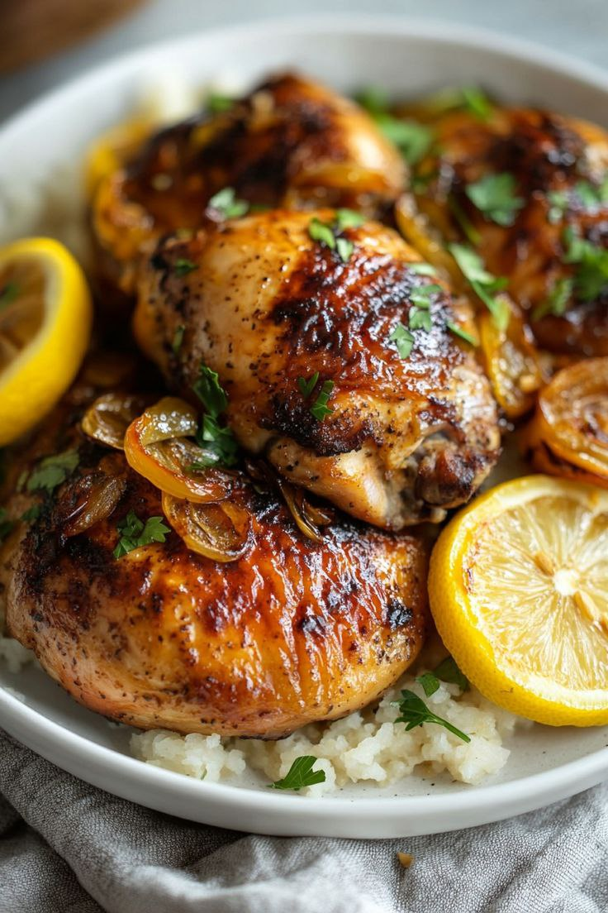

Poulet Yassa (Sénégal) – Poulet mariné dans une sauce à base d'oignons, de citron et de moutarde 🍽
Ingrédients :
- 4 cuisses de poulet
- 3 oignons émincés
- Jus de 2 citrons
- 2 cuillères à soupe de moutarde
- 2 cuillères à soupe d’huile d’arachide
- 1 cube de bouillon
- 1 piment (facultatif)
- Sel et poivre au goût
- Riz pour accompagner
Instructions :
- 1. Couper les oignons en fines lamelles et presser les citrons.
- 2. Mélanger les oignons, le jus de citron, la moutarde, le sel et le poivre.
- 3. Mariner le poulet dans ce mélange pendant 2 heures.
- 4. Faire chauffer l’huile et faire dorer le poulet.
- 5. Ajouter la marinade et laisser cuire à feu doux pendant 30 minutes.
- 6. Servir avec du riz bien chaud.